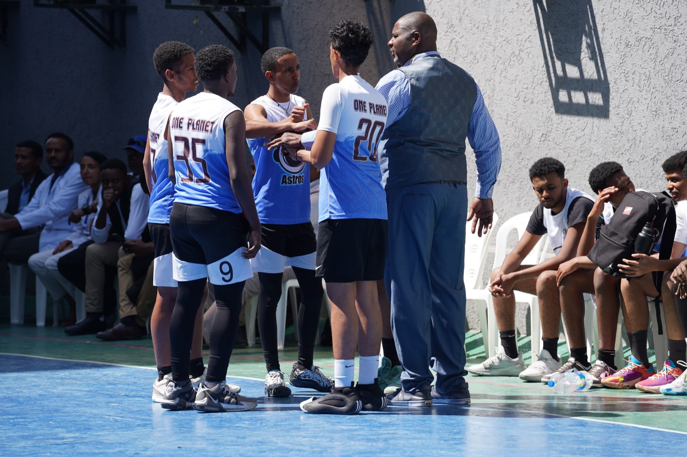
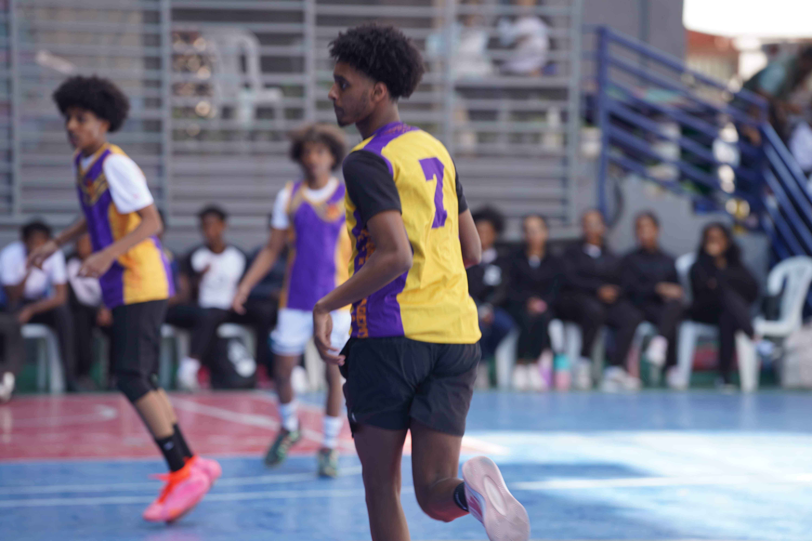

Documentary · End-to-end production
20 Years of Excellence
Produced an 18-minute documentary presented at the U.S. Embassy to international sport leaders.

01 · Challenge
The organization needed a credible film that could communicate two decades of youth development work to partners and international sport leaders.
The story had to balance institutional history, human impact, and the energy of the basketball programs in one concise documentary.
02 · My role
I owned production end to end: story development, planning, filming, sound, editing, and final delivery. I also coordinated the presentation context with the wider program team.
- Story development
- Production planning
- Cinematography
- Sound
- Editing and color
- Final delivery
03 · Process
Make the work visible.
Find the story
Shaped twenty years of work into a focused narrative about youth, discipline, and opportunity.
Produce
Planned and captured interviews, basketball activity, and supporting material.
Finish
Edited, colored, mixed, and prepared the 18-minute film for presentation.
04 · Execution
A complete documentary that gave partners a clear, human view of the organization's history and its role in youth basketball development.
05 · Results
The outcome.



Tools & methods
- Story development
- Sony FX3
- DaVinci Resolve
- Production planning
Related links